TRANG CHỦ
Màn hình trang chủ
Trang chủ cung cấp cái nhìn tổng quan về hệ thống giám sát, hiển thị trực quan các khu vực đã lắp đặt camera như biển và trạm biến áp trên bản đồ. Tại đây, người dùng có thể nhanh chóng theo dõi các thông số quan trọng như: tổng số camera, số điểm giám sát và số lượng cảnh báo mới nhất. Các con số hiển thị cạnh tên khu vực/trạm biểu thị số lượng cảnh báo hiện có tại địa điểm đó.
Lưu ý:
-
-Thông tin về nhiệt độ môi trường hiện đang trong quá trình phát triển.
- Người dùng có thể đổi màu nền web bằng cách nhấn vào nút
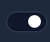
ở góc trên bên phải.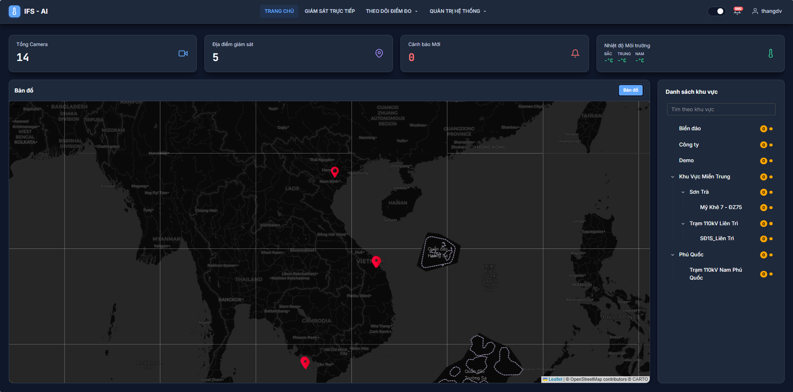
Sơ đồ 1 sợi
Người dùng có thể xem sơ đồ 1 sợi bằng cách nhấp vào tên các trạm như SĐ1S_Liên Trì hoặc Trạm 110kV Nam Phú Quốc. Khi di chuột vào từng điểm đo trên sơ đồ,các thông số nhiệt độ min, max và trung bình sẽ được hiển thị. Đặc biệt, hệ thống sẽ tự động đổi màu các điểm đo sang vàng hoặc đỏ nếu có cảnh báo, giúp bạn dễ dàng nhận diện tình trạng trạm một cách trực quan.
Lưu ý: Trạm nào chưa có sơ đồ 1 sợi thì khi ấn sẽ không hiện ra sơ đồ.
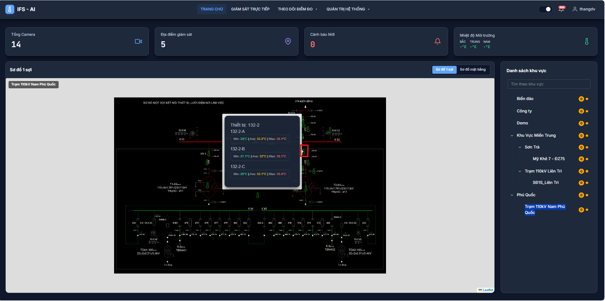
Nếu muốn xem chi tiết, người dùng chỉ cần nhấn vào biểu tượng trên sơ đồ. Trang web sẽ hiển thị bảng thông số chi tiết giúp theo dõi kỹ hơn về tình trạng các thiết bị, so sánh nhiệt độ của thiết bị đó với pha min, nhiệt độ môi trường và pha min của toàn trạm.
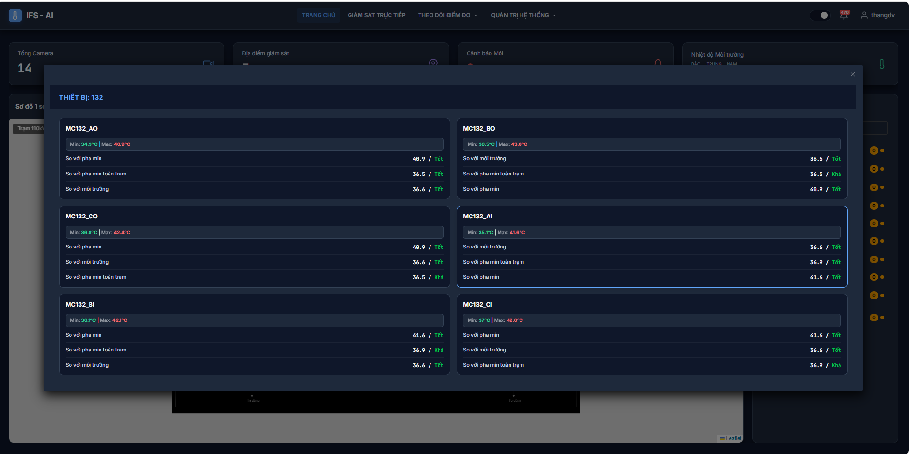
Sơ đồ mặt bằng
Sau khi mở sơ đồ 1 sợi, người dùng có thể nhấp vào nút "Sơ đồ mặt bằng" ngay bên cạnh để chuyển sang giao diện mô phỏng 3D toàn cảnh của trạm. Hệ thống sẽ hiển thị mô hình 3D toàn trạm, cho phép tương tác trực tiếp: lăn chuột để phóng to/thu nhỏ và nhấn giữ kéo chuột để điều hướng, xem xét mọi vị trí trong trạm một cách dễ dàng.Lưu ý: Trạm nào chưa có sơ đồ mặt bằng thì khi ấn tên trạm sẽ không hiện chức năng này.

GIÁM SÁT TRỰC TIẾP
Màn hình giám sát trực tiếp
Trang này cho phép theo dõi luồng video trực tiếp từ tất cả các camera trong hệ thống, bao gồm cả camera thường và camera nhiệt. Phía bên trái là danh sách khu vực được phân tầng rõ ràng (như Biển đảo, Công ty, Khu vực miền Trung...).

Người dùng có thể xem riêng 1 camera bằng cách nhấp vào tên camera có biểu tượng đứng trước tên tương ứng trong danh sách.

Nếu muốn xem tất cả các camera ở 1 khu vực nào đó thì nhấp tên khu vực, có biểu tượng là đứng trước tên tương ứng trên danh sách.

Phóng to toàn màn hình
Người dùng có thể nhấn vào biểu tượng phóng to ở góc bên cạnh chữ thiết lập  để xem tất cả camera trên màn hình ở chế
độ fullscreen.
Khi ở chế độ toàn màn hình, nhấn phím Esc để thoát và quay lại màn hình giám sát.
để xem tất cả camera trên màn hình ở chế
độ fullscreen.
Khi ở chế độ toàn màn hình, nhấn phím Esc để thoát và quay lại màn hình giám sát.
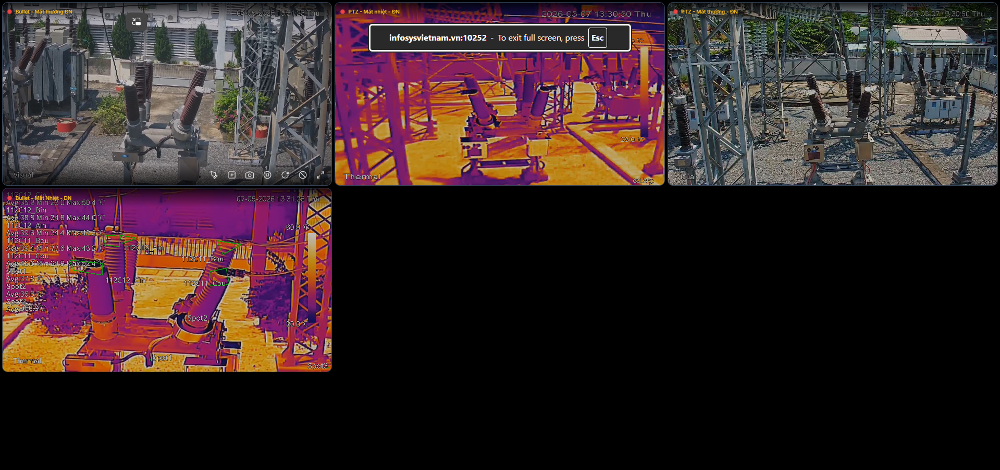
Thiết lập hiển thị
Người dùng nhấn vào nút để mở giao diện cấu hình hiển thị camera. Tại đây, có thể chọn số lượng camera hiển thị trên màn hình, thay đổi thứ tự sắp xếp và ghim các camera quan trọng để tiện theo dõi.

Để ghim camera, người dùng chọn checkbox bên cạnh tên camera trong danh sách khu vực. Camera được chọn sẽ được thêm vào danh sách ghim.

Để thay đổi bố cục hiển thị, người dùng chọn một trong các ô bên dưới. Các tùy chọn lần lượt tương ứng với chế độ hiển thị 1, 2, 4 hoặc 9 camera.
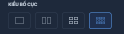
Khi cần thay đổi thứ tự các camera đã ghim, người dùng giữ chuột vào dòng camera muốn di chuyển trong danh sách ghim, sau đó kéo thả đến vị trí mong muốn.

Khi thiết lập xong thì nhấn vào nút  để lưu các thay đổi hoặc nút
để lưu các thay đổi hoặc nút
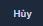
để hủy bỏ các thay đổi.Các chức năng của camera
Để sử dụng các chức năng của camera, người dùng có thể di chuột vào khung video của camera đó, các biểu tượng chức năng sẽ hiện ra ở góc dưới bên phải của khung video.
Lưu ý : Một số chức năng đang phát triển nên khi nhấn vào sẽ không hoạt động.

Để điều khiển PTZ, người dùng nhấn vào biểu tượng
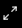
trên khung camera. Hệ thống sẽ mở giao diện điều khiển riêng, cho phép sử dụng các chức năng ptz của camera đã chọn.
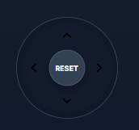
Chức năng này cho phép người dùng điều khiển camera xoay 360 độ để thay đổi góc quan sát. Người dùng chỉ cần di chuyển chuột đến hướng muốn quan sát và nhấn vào khu vực đó để camera tự động xoay theo hướng tương ứng. Nút reset sẽ đưa camera về vị trí ban đầu đã được cấu hình sẵn.
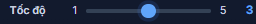
Thanh tốc độ dùng để điều chỉnh mức độ di chuyển của camera PTZ. Người dùng có thể giảm tốc độ khi cần quan sát chi tiết hoặc tăng tốc độ khi muốn xoay camera nhanh hơn trong quá trình điều khiển thủ công, tuần tra hoặc preset.
Phóng to/thu nhỏ hình ảnh: nhấn
để phóng to hoặc
 để thu nhỏ khung hình theo nhu cầu quan sát.
để thu nhỏ khung hình theo nhu cầu quan sát.
Vẽ điểm/vùng đo nhiệt: nhấn
 rồi chấm các điểm trực tiếp trên khung video
để tạo vùng đo.
rồi chấm các điểm trực tiếp trên khung video
để tạo vùng đo.
Sau khi vẽ xong, nhấn để hệ thống đo nhiệt độ trong vùng đã chọn. Khi đo nhiệt độ xong rồi thì ở dưới nút đo sẽ hiển thị 3 kết quả là nhiệt độ cao nhất, nhiệt độ thấp nhất và nhiệt độ trung bình. Nếu vùng vẽ chưa hợp lệ, hệ thống thông báo "không phải hình đa giác lồi, vui lòng vẽ lại!".
Để hủy thao tác hiện tại và vẽ vùng mới, nhấn rồi thực hiện lại từ đầu.
Lưu ý: Những camera nào không hỗ trợ chức năng này thì khi vẽ vùng xong sẽ không đo được.

Cảnh báo AI
Danh sách cảnh báo AI
Trang này là trung tâm lưu trữ các sự kiện đã được thiết lập cho hệ thống AI nhận diện. Người dùng có thể nhanh chóng tra cứu lịch sử thông qua bộ lọc thông minh theo thời gian, khu vực, tên camera hoặc loại cảnh báo cụ thể (như phát hiện tàu thuyền, người, khói, xe máy,...).
Mọi cảnh báo đều được hiển thị chi tiết dưới dạng danh sách, bao gồm hình ảnh chụp từ hiện trường, thời gian chính xác và vị trí xảy ra sự kiện. Ngoài ra, giao diện còn hỗ trợ linh hoạt các chế độ hiển thị (dạng lưới hoặc danh sách) cùng tính năng phân trang.

Để chuyển sang danh sách dạng lưới thì chỉ cần nhấn vào nút grid

Muốn phóng to hình ảnh cảnh báo, người dùng nhấn vào ảnh tương ứng ở cột Hình ảnh trong danh sách còn khi ở trạng thái lưới thì chỉ cần ảnh tương ứng ở trong ô .
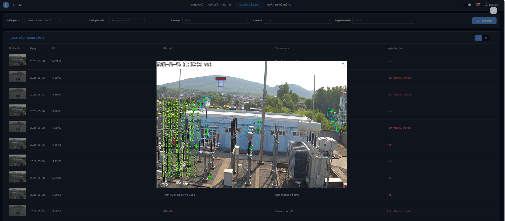
Người dùng nếu muốn chỉnh danh sách cột thì chỉ cần nhấn vào nút  rồi chọn cột nào muốn ẩn đi hoặc hiện trên danh
sách rồi ấn lưu để xác nhận hoặc hủy nếu muốn thoát.
rồi chọn cột nào muốn ẩn đi hoặc hiện trên danh
sách rồi ấn lưu để xác nhận hoặc hủy nếu muốn thoát.
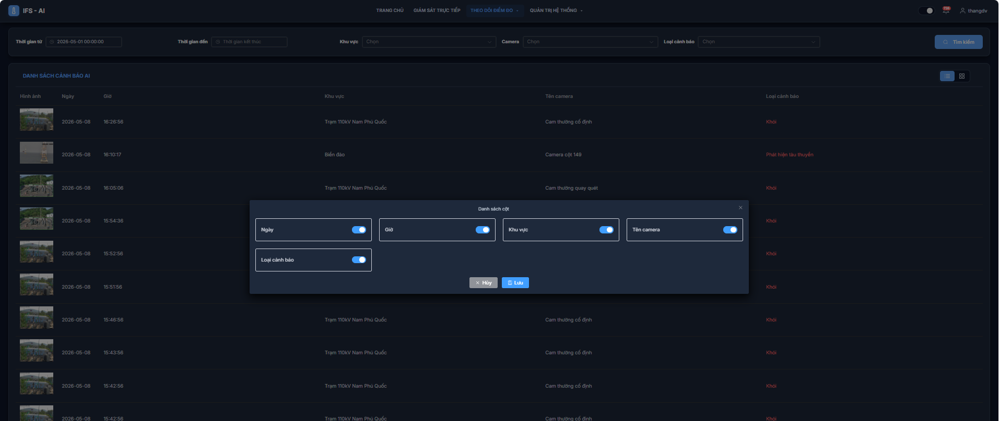
Nếu người dùng muốn chỉnh số dòng trên 1 trang như là 20, 30, 100 dòng thì chỉ cần nhấn nút
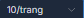
rồi chọn số dòng muốn hiển thị trên mỗi trang.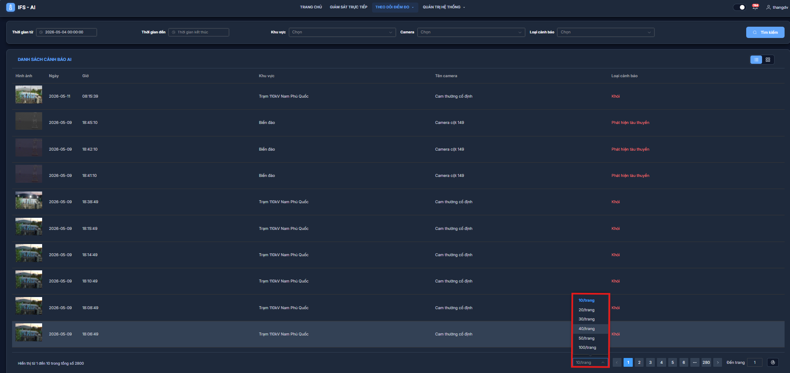
Tìm kiếm
Người dùng chọn khoảng thời gian cần tra cứu tại ô "Thời gian từ" và "Thời gian đến". Sau
đó chọn thêm khu vực, camera và loại cảnh báo từ danh sách thả xuống nếu cần, rồi nhấn nút

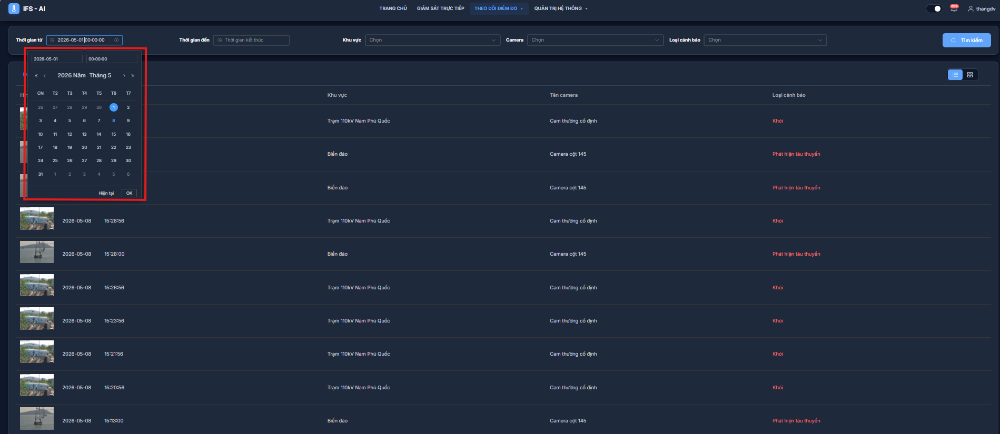
Nhiệt độ vượt ngưỡng
Danh sách Nhiệt độ vượt ngưỡng
Trang quản lý "Nhiệt độ vượt ngưỡng" tập trung lưu trữ mọi dữ liệu cảnh báo khi hệ thống phát hiện sự cố quá nhiệt. Thông qua bảng thống kê chi tiết, người dùng có thể theo dõi hình ảnh nhiệt thực tế với các chỉ số quan trọng như độ chênh lệch so với pha min hoặc pha min toàn trạm. Bộ lọc tại đây hỗ trợ truy xuất nhanh lịch sử theo thời gian và thiết bị, kết hợp cùng tính năng "Xuất file" giúp tối ưu hóa công tác báo cáo. Đặc biệt, việc theo dõi trạng thái và thời gian xử lý tại mỗi dòng bản ghi đảm bảo mọi sự cố đều được kiểm soát chặt chẽ, không bị bỏ sót..
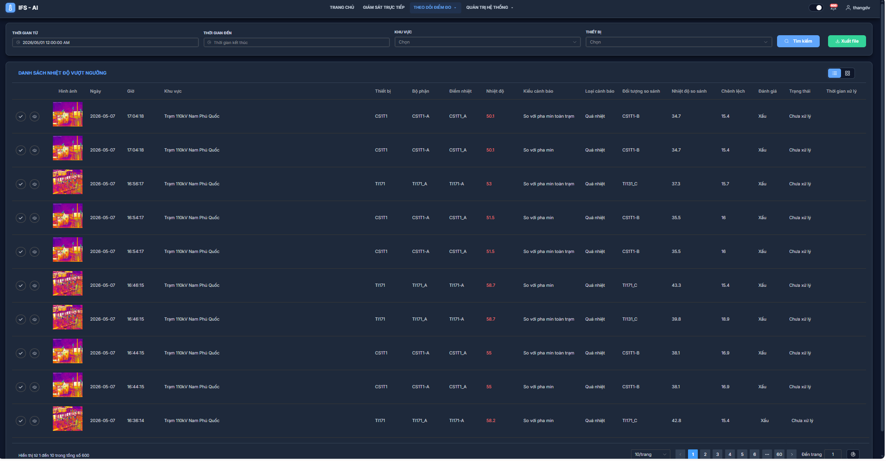
Để chuyển sang danh sách dạng lưới thì chỉ cần nhấn vào nút grid
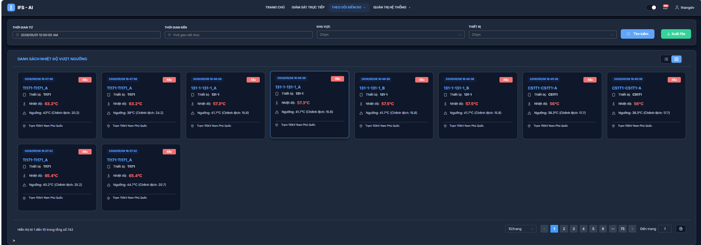
Muốn phóng to hình ảnh cảnh báo, người dùng nhấn vào ảnh tương ứng ở cột Hình ảnh trong danh sách.
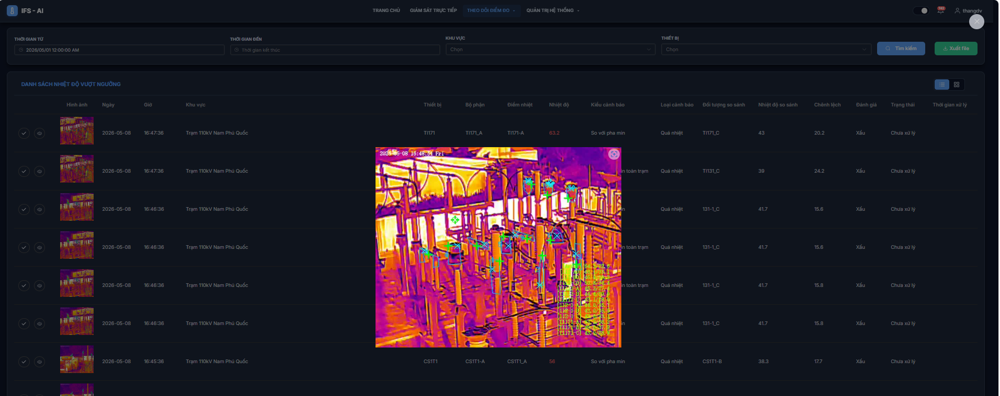
Người dùng nếu muốn chỉnh danh sách cột thì chỉ cần nhấn vào nút rồi chọn cột nào muốn ẩn đi hoặc hiện trên danh
sách rồi ấn lưu để xác nhận hoặc hủy nếu muốn thoát.
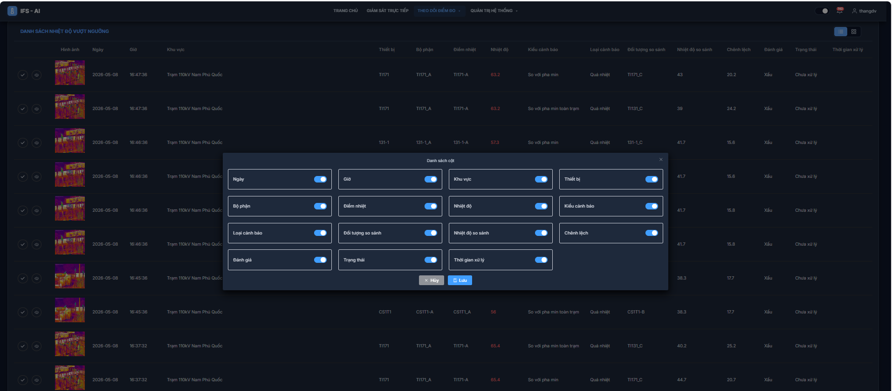
Nếu người dùng muốn chỉnh số dòng trên 1 trang như là 20, 30, 100 dòng thì chỉ cần nhấn nút rồi chọn số dòng muốn hiển thị trên mỗi trang.
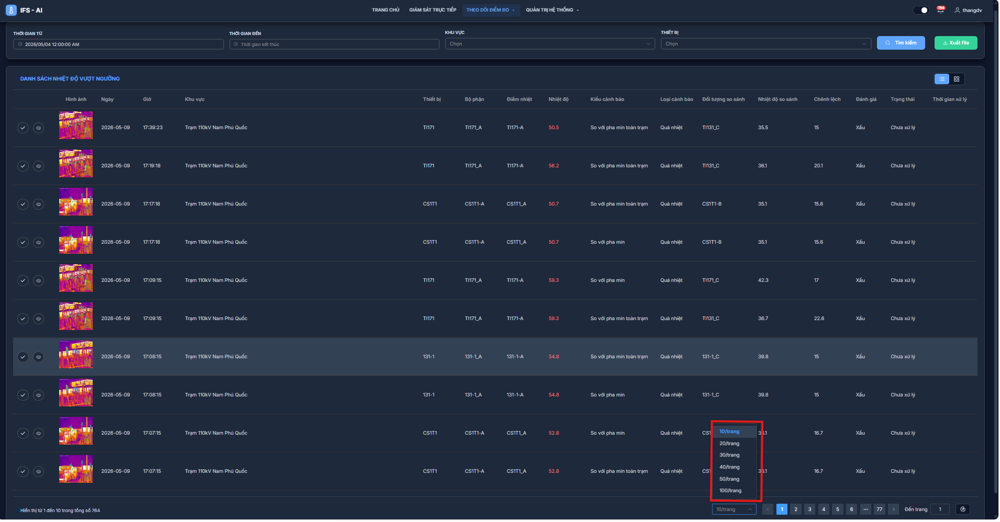
Xử lý cảnh báo
Khi đã xử lý xong sự cố, người dùng có thể xác nhận lại trạng thái bằng cách nhấn vào nút tích  .
.
Ta có thể xem chi tiết cảnh báo đó bằng cách nhấn nút  , ở đây ta có thể nhập các thông tin ở ô nhân
viên xử lý, ghi chú cảnh báo và chọn trạng thái cho cảnh báo này. Khi nhập xong thì chọn nút
, ở đây ta có thể nhập các thông tin ở ô nhân
viên xử lý, ghi chú cảnh báo và chọn trạng thái cho cảnh báo này. Khi nhập xong thì chọn nút  để lưu lại.
để lưu lại.
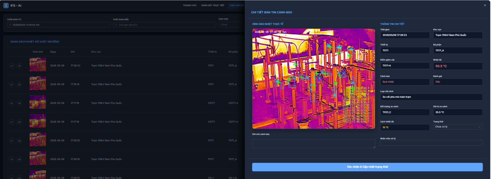
Chúng ta còn có thể xem chi tiết cảnh báo bằng cách nhấn vào nút , ở dưới nút sẽ xuất hiện danh sách các cảnh báo
mới nhất. Ấn vào dòng bất kỳ sẽ hiển thị giao diện mới về chi tiết cảnh báo đó. Ở đây ta cũng có thể nhập
các thông tin ở ô nhân viên xử lý, ghi chú cảnh báo và chọn trạng thái cho cảnh báo này. Khi nhập xong thì
cuộn xuống dưới cùng rồi chọn nút để lưu lại.
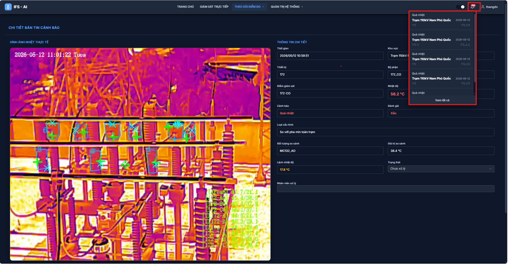
Tìm kiếm và xuất file
Người dùng chọn khoảng thời gian cần tra cứu tại ô "Thời gian từ" và "Thời gian đến". Sau
đó chọn thêm khu vực, thiết bị từ danh sách thả xuống nếu cần, rồi nhấn nút
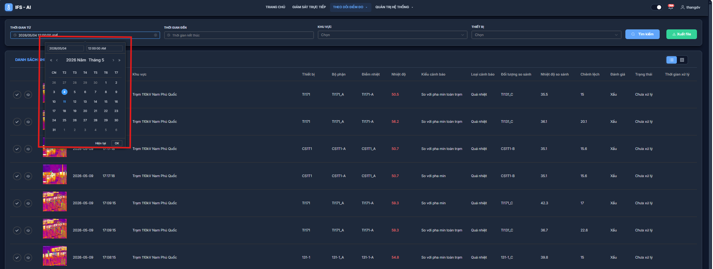
Để xuất file thì nhấn vào nút  hệ
thống sẽ xuất ra file excel danh sách các cảnh báo vượt ngưỡng theo bộ lọc đã chọn.
hệ
thống sẽ xuất ra file excel danh sách các cảnh báo vượt ngưỡng theo bộ lọc đã chọn.
Nhật ký nhiệt độ
Nhật ký nhiệt độ
Trang Nhật ký nhiệt độ cung cấp toàn bộ lịch sử đo đạc của hệ thống. Trang này thực hiện các đối chiếu giữa nhiệt độ thực tế với các thông số môi trường, pha min và pha min toàn trạm nhằm phát hiện sớm các biến động bất thường qua đánh giá trạng thái. Thông qua việc kết hợp bộ lọc tìm kiếm nâng cao và công cụ xuất dữ liệu, người dùng dễ dàng trích xuất báo cáo phục vụ công tác phân tích, đánh giá hiệu quả vận hành định kỳ..
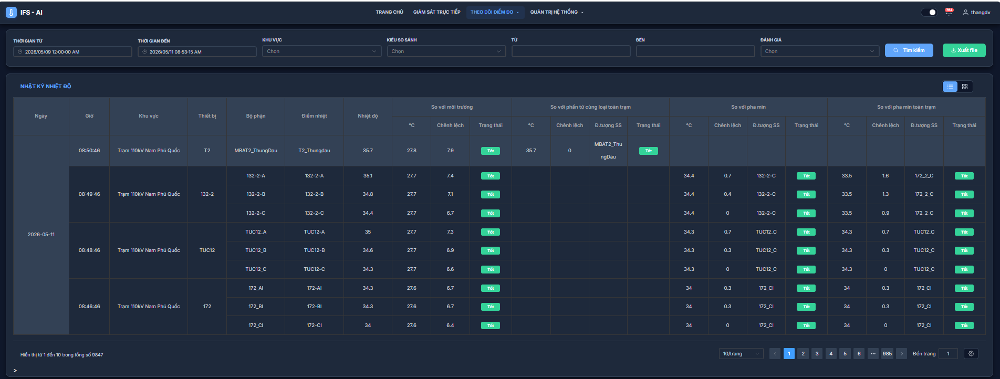
Để chuyển sang danh sách dạng lưới thì chỉ cần nhấn vào nút grid
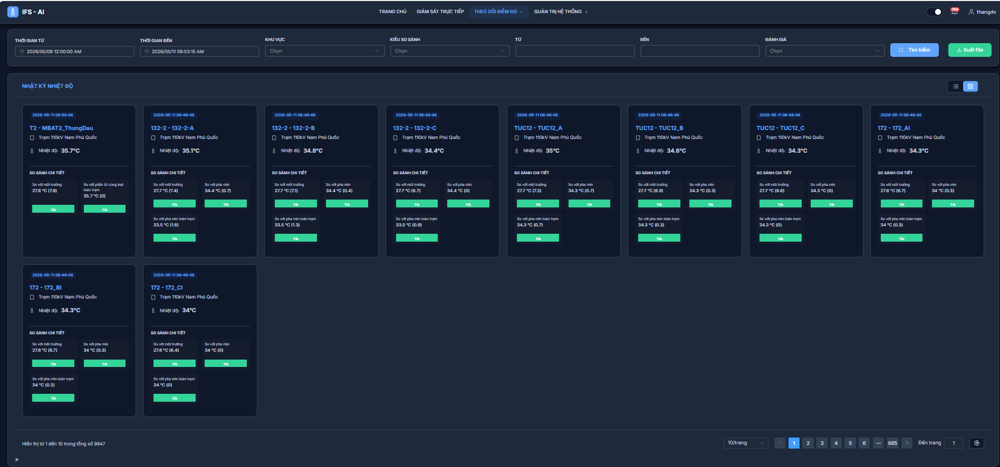
Người dùng nếu muốn chỉnh danh sách cột thì chỉ cần nhấn vào nút rồi chọn cột nào muốn ẩn đi hoặc hiện trên danh
sách rồi ấn lưu để xác nhận hoặc hủy nếu muốn thoát.

Nếu người dùng muốn chỉnh số dòng trên 1 trang như là 20, 30, 100 dòng thì chỉ cần nhấn nút rồi chọn số dòng muốn hiển thị trên mỗi trang.
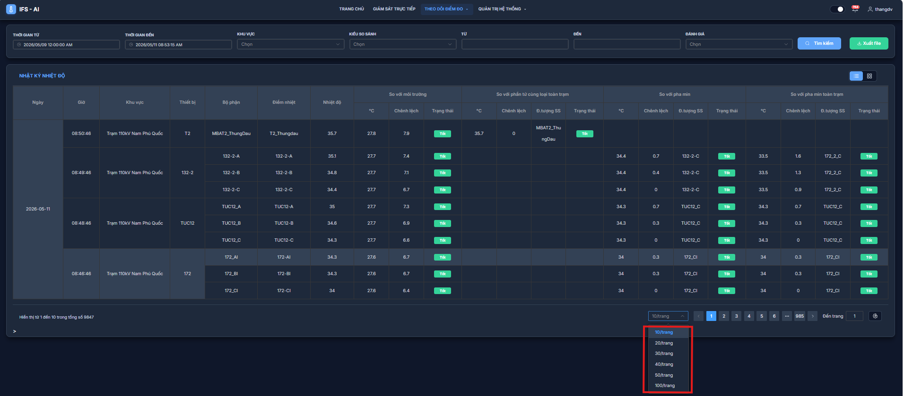
Tìm kiếm và xuất file
Người dùng chọn khoảng thời gian cần tra cứu tại ô "Thời gian từ" và "Thời gian đến".
Sau đó có thể chọn thêm khu vực, kiểu so sánh và đánh giá từ danh sách thả xuống. Hai ô
"Từ" và "Đến" dùng để nhập khoảng chênh lệch nhiệt độ cần lọc, các ô này chỉ cho phép nhập số và chỉ
lọc được sau khi đã chọn kiểu so sánh. Khi hoàn tất bộ lọc, nhấn nút
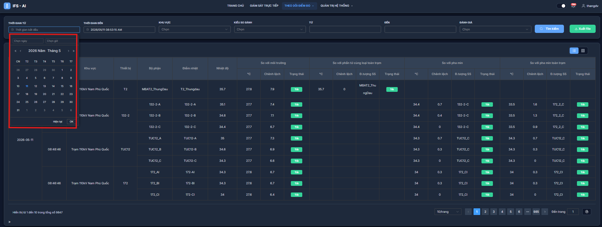
Để xuất file thì nhấn vào nút hệ
thống sẽ xuất ra file excel danh sách nhật ký nhiệt độ theo bộ lọc đã chọn.
Tổng hợp phân tích
Nhật ký nhiệt độ theo điểm đo
Trang Nhật ký nhiệt độ theo điểm đo tích hợp biểu đồ miền (Area Chart) nhiều lớp giúp trực quan hóa dữ liệu nhiệt độ của các pha và môi trường theo thời gian. Điểm ưu việt của biểu đồ này nằm ở tính năng tương tác trực tiếp: khi người dùng di chuột đến bất kỳ thời điểm nào trên biểu đồ, hệ thống sẽ hiển thị bảng thông tin chi tiết về giá trị nhiệt độ tại đúng thời điểm đó. Cơ chế này hỗ trợ việc đối soát thông số chính xác giữa các đối tượng đo, phục vụ công tác giám sát và phát hiện nhanh các biến động bất thường.
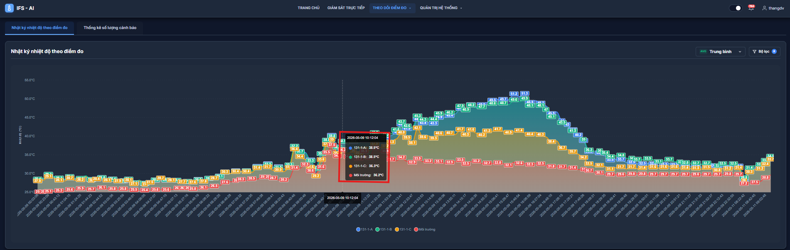
Bộ lọc
Để lọc dữ liệu theo nhiệt độ, người dùng nhấn vào ô "Trung bình" bên cạnh bộ lọc. Danh sách tùy chọn sẽ hiển thị các kiểu nhiệt độ cần xem, gồm nhiệt độ max, min và trung bình.
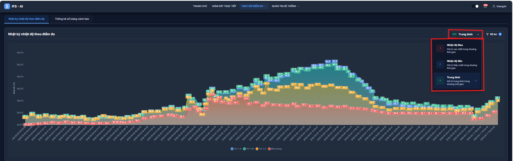
Người dùng có thể lọc chi tiết hơn bằng cách nhấn nút
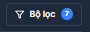
để mở bảng lọc theo khu vực, thiết bị, bộ phận và thời gian.Trước tiên, chọn khu vực cần lọc. Danh sách thiết bị sẽ tự động cập nhật theo khu vực đã chọn. Sau khi chọn thiết bị, danh sách bộ phận sẽ cập nhật theo thiết bị tương ứng. Tiếp tục chọn bộ phận để hệ thống hiển thị các điểm giám sát liên quan. Người dùng cũng có thể bật hoặc tắt hiển thị nhiệt độ trên biểu đồ. Cuối cùng, chọn khoảng thời gian cần lọc. .

Sau khi đã chọn đầy đủ điều kiện, nhấn nút  rồi chọn
rồi chọn  để áp dụng bộ lọc. Nếu muốn đặt lại về trạng
thái ban đầu, nhấn nút
để áp dụng bộ lọc. Nếu muốn đặt lại về trạng
thái ban đầu, nhấn nút
Thống kê số lượng cảnh báo
Để chuyển sang trang này, người dùng cần nhấn vào nút "Thống kê số lượng cảnh báo" bên cạnh chữ "Nhật ký nhiệt độ theo điểm đo" trên thanh điều hướng. Trang Thống kê số lượng cảnh báo sử dụng biểu đồ cột (Column Chart) nhằm tổng hợp tần suất xuất hiện các sự cố theo từng ngày. Tính năng này hỗ trợ người dùng theo dõi trực quan sự biến động về số lượng cảnh báo thông qua bộ lọc khu vực và khoảng thời gian tùy chỉnh. Đặc biệt, khi tương tác bằng cách di chuột vào từng cột, hệ thống sẽ hiển thị chính xác tổng số cảnh báo của ngày đó qua bảng chú giải nhanh (tooltip).

Tìm kiếm và download
Người dùng chọn khoảng thời gian cần tra cứu tại ô "Thời gian từ" và "Thời gian đến".
Sau đó có thể chọn thêm khu vực. Khi hoàn tất bộ lọc, nhấn nút
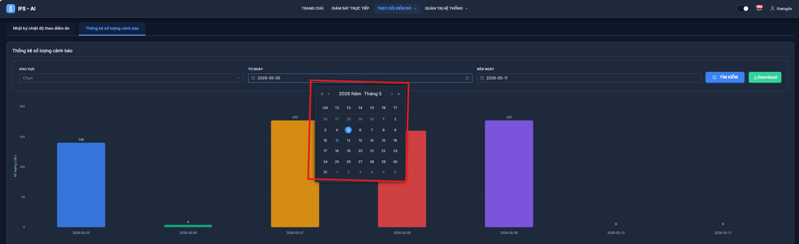
Người dùng có thể xuất dữ liệu biểu đồ ra file excel để phục vụ công tác báo cáo và phân tích sâu hơn.
Để thực hiện, nhấn vào nút  hệ thống sẽ xuất ra file excel theo bộ lọc
đã chọn.
hệ thống sẽ xuất ra file excel theo bộ lọc
đã chọn.
Khu vực
Danh sách khu vực
Trang Danh sách khu vực là nơi giúp người dùng quản lý tất cả các địa điểm giám sát trong hệ thống. Tại giao diện này, có thể dễ dàng tìm kiếm một khu vực bất kỳ dựa trên tên gọi hoặc trạng thái hoạt động của nó. Nếu muốn bổ sung địa điểm mới, chỉ cần sử dụng nút +Thêm. Ngoài ra, cột hành động ở cuối mỗi dòng cho phép linh hoạt chỉnh sửa thông tin hoặc xóa bỏ các khu vực không còn sử dụng.
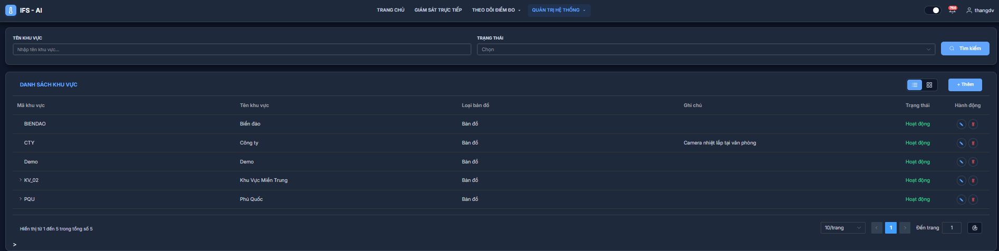
Để chuyển sang danh sách dạng lưới thì chỉ cần nhấn vào nút grid
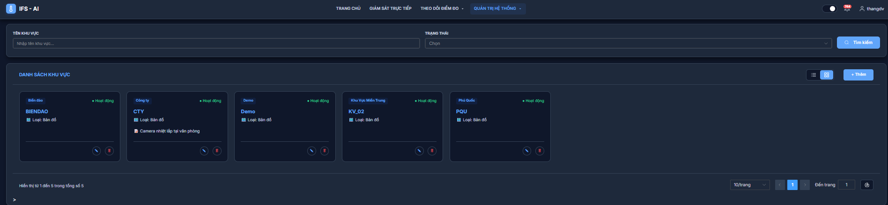
Người dùng cần chỉnh danh sách cột thì chỉ cần nhấn vào nút rồi chọn cột nào muốn ẩn đi hoặc hiện trên danh
sách rồi ấn lưu để xác nhận hoặc hủy nếu muốn thoát.
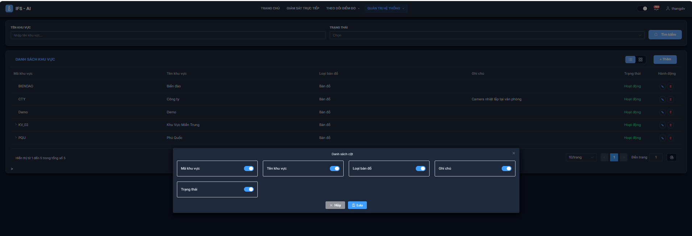
Nếu người dùng muốn chỉnh số dòng trên 1 trang như là 20, 30, 100 dòng thì chỉ cần nhấn nút rồi chọn số dòng muốn hiển thị trên mỗi trang.
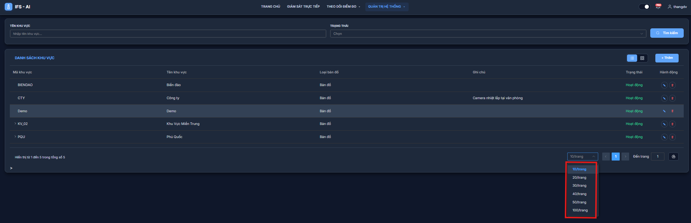
Thêm khu vực
Để thêm khu vực mới, người dùng nhấn vào nút . Hệ thống sẽ mở giao diện nhập liệu, yêu cầu điền các thông tin cơ bản như Tỉnh, Mã khu vực, Tên khu vực, Loại bản đồ, Khu vực cha, Tọa độ, Ghi chú, Giá trị đánh giá, Nhiệt độ môi trường, Trạng thái.
Lưu ý: Các trường có dấu * đỏ là bắt buộc phải nhập.
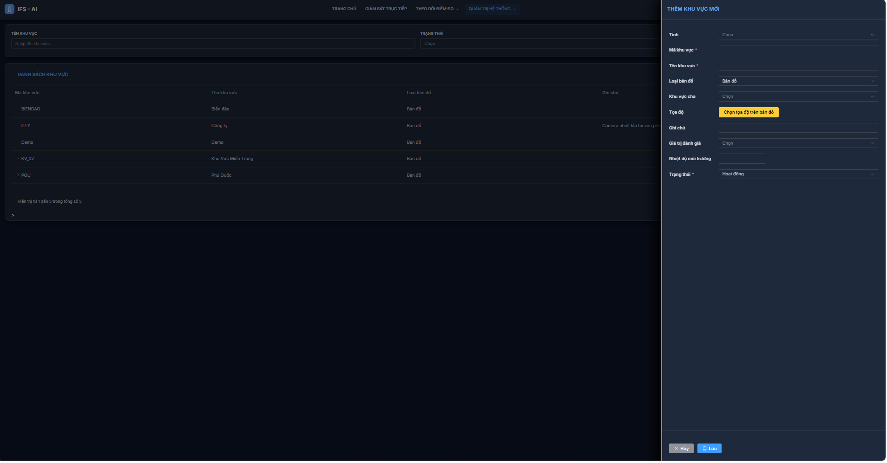
Để thêm tọa độ cho khu vực, người dùng nhấn nút
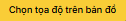
để mở bản đồ. Sau đó, chọn vị trí bằng cách nhấn trực tiếp trên bản đồ hoặc nhập kinh độ, vĩ độ ở góc dưới bên trái. Người dùng có thể nhập mức zoom hoặc lăn chuột để phóng to, thu nhỏ bản đồ. Khi chọn xong, nhấn nút lưu. Sau khi hoàn tất, nhấn nút lưu để xác nhận thêm mới khu vực hoặc nút hủy để thoát mà không lưu.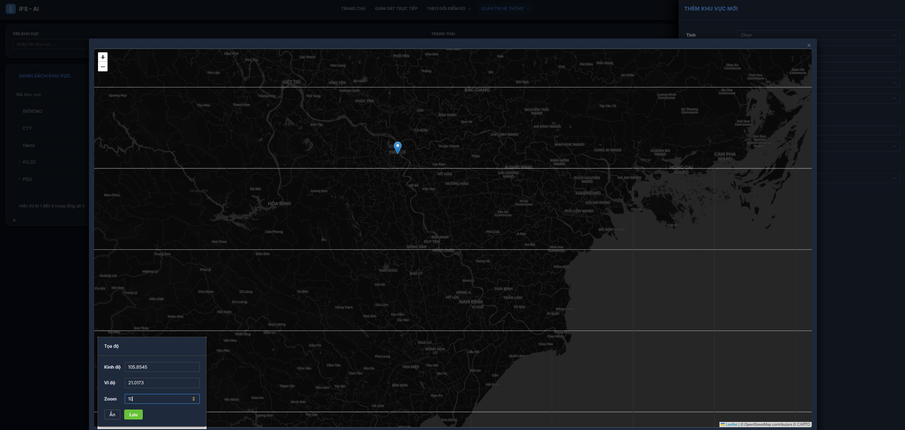
Chỉnh sửa và xóa
Để chỉnh sửa thông tin khu vực, người dùng nhấn vào nút trong cột hành động của dòng cần chỉnh sửa. Hệ thống sẽ mở giao diện nhập liệu với các thông tin đã có tương tự giao diện khi thêm, người dùng có thể cập nhật lại các trường cần thiết và nhấn nút lưu để xác nhận hoặc nút hủy để thoát mà không lưu.
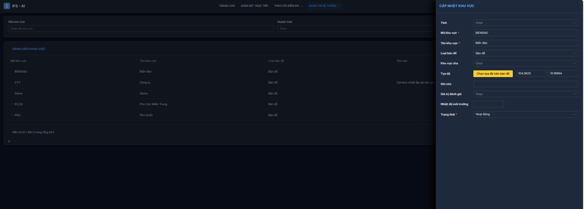
Để xóa khu vực, người dùng nhấn vào nút
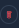
trong cột hành động của dòng cần xóa. Hệ thống sẽ yêu cầu xác nhận trước khi thực hiện xóa bỏ hoàn toàn khu vực đó khỏi hệ thống. Nếu đồng ý nhấn nút xóa không thì ấn hủy.Tìm kiếm
Để tìm kiếm khu vực, người dùng nhập tên khu vực, trạng thái rồi ấn nút . Hệ thống sẽ tự động lọc và hiển thị các khu
vực có thông tin khớp với từ khóa đã nhập.
Camera
Danh sách camera
Trang Danh sách camera là nơi giúp bạn quản lý toàn bộ hệ thống thiết bị ghi hình tại các trạm. Tại đây, việc tìm kiếm camera trở nên đơn giản nhờ các bộ lọc theo tên, chức năng (camera nhiệt, camera giám sát tổng quát) hoặc khu vực cụ thể. Danh sách hiển thị đầy đủ trạng thái hoạt động cùng các công cụ hỗ trợ nhanh trong cột hành động, cho phép bạn chỉnh sửa cấu hình, xem thử hình ảnh hoặc xóa thiết bị khi cần thiết. Ngoài ra, tính năng Import IEC và Export giúp bạn dễ dàng đồng bộ dữ liệu hệ thống, đảm bảo công tác quản lý vận hành luôn chính xác và hiệu quả.
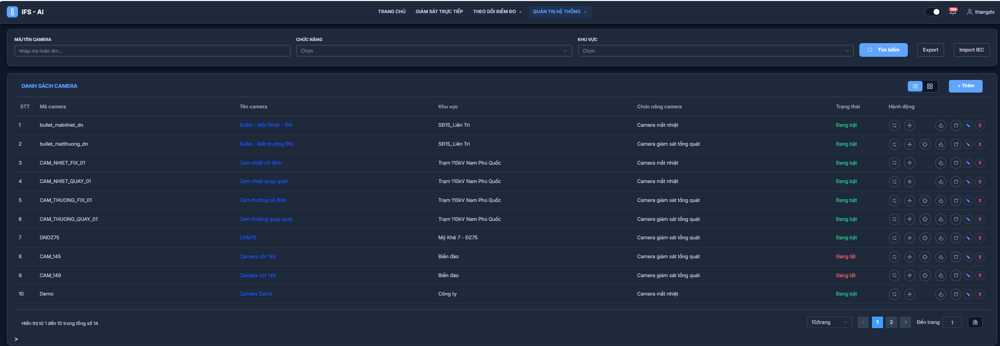
Để chuyển sang danh sách dạng lưới thì chỉ cần nhấn vào nút grid
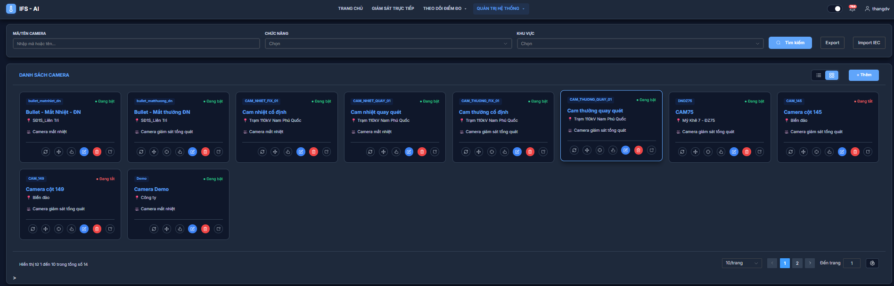
Người dùng có thể chuyển sang chế độ giám sát trực tiếp camera khi nhấn vào tên camera .
Người dùng cần chỉnh danh sách cột thì chỉ cần nhấn vào nút rồi chọn cột nào muốn ẩn đi hoặc hiện trên danh
sách rồi ấn lưu để xác nhận hoặc hủy nếu muốn thoát.
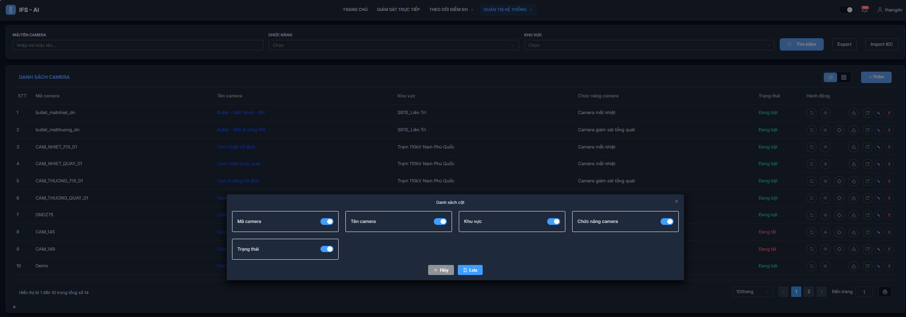
Nếu người dùng muốn chỉnh số dòng trên 1 trang như là 20, 30, 100 dòng thì chỉ cần nhấn nút rồi chọn số dòng muốn hiển thị trên mỗi trang.
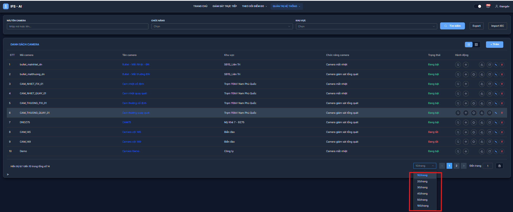
Thêm camera
Để thêm camera mới, người dùng nhấn vào nút . Hệ thống sẽ mở giao diện nhập liệu, yêu cầu điền các thông tin cơ bản như Mã camera, Chức năng camera, Khu vực, Tần suất kiểm tra (giây), Camera tích hợp, Username, password, Tên camera, Loại camera, Đường dẫn camera, Địa chỉ IP (LAN), Địa chỉ IP (WAN), Hãng camera, Trạng thái, Địa chỉ IEC.
Lưu ý: Các trường có dấu * đỏ là bắt buộc phải nhập.
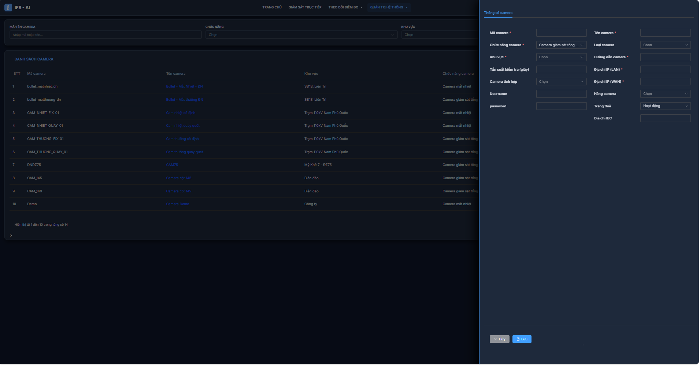
Khi hoàn tất, nhấn nút lưu để xác nhận thêm mới camera hoặc nút hủy để thoát mà không lưu.
Chỉnh sửa và xóa
Người dùng có thể chỉnh sửa thông tin camera bằng cách nhấn vào nút trong cột hành động của dòng cần chỉnh sửa. Hệ thống sẽ mở giao diện nhập liệu với các thông tin đã có tương tự giao diện khi thêm, người dùng có thể cập nhật lại các trường cần thiết và nhấn nút lưu để xác nhận hoặc nút hủy để thoát mà không lưu.
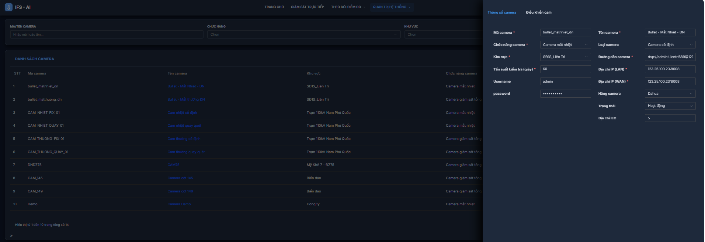
Ngoài ra camera còn có những chức năng khác như là Đồng bộ góc quay, Xem danh sách góc quay, Chỉnh góc quay, cài đặt góc quay, cài đặt AI.(Thứ tự theo từ trái sang phải)
Lưu ý: Với những camera không hỗ trợ một số chức năng, các ô chức năng tương ứng sẽ không hiển thị.
Để điều chỉnh góc quay, người dùng nhấn nút tại cột hành động của camera tương ứng. Hệ thống sẽ mở giao diện điều chỉnh, cho phép vẽ vùng đo và xem ảnh từ camera.
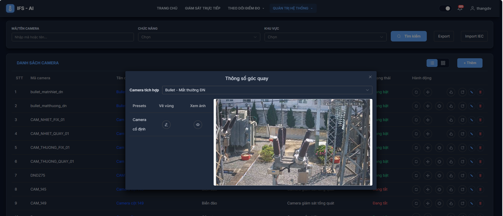
Để cài đặt góc quay cho camera, người dùng nhấn nút tại cột hành động của camera cần thao tác. Hệ thống sẽ chuyển đến giao diện quản lý góc quay.
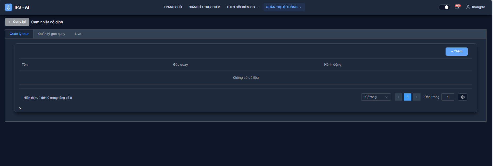
Tại trang Quản lý góc quay, nhấn nút để thêm mới góc quay.
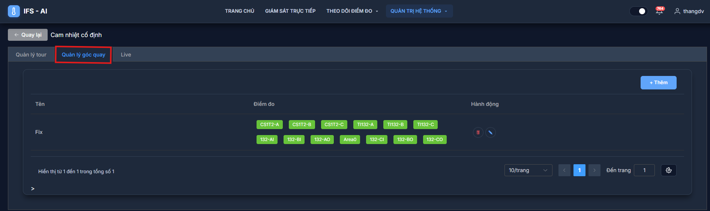
Hệ thống sẽ tự động chuyển sang trang Live. Tại đây, người dùng có thể điều khiển PTZ và vẽ vùng đo cho góc quay mới. Sau khi hoàn tất, nhấn nút lưu vùng đo để xác nhận hoặc xóa vùng đo nếu cần vẽ lại.
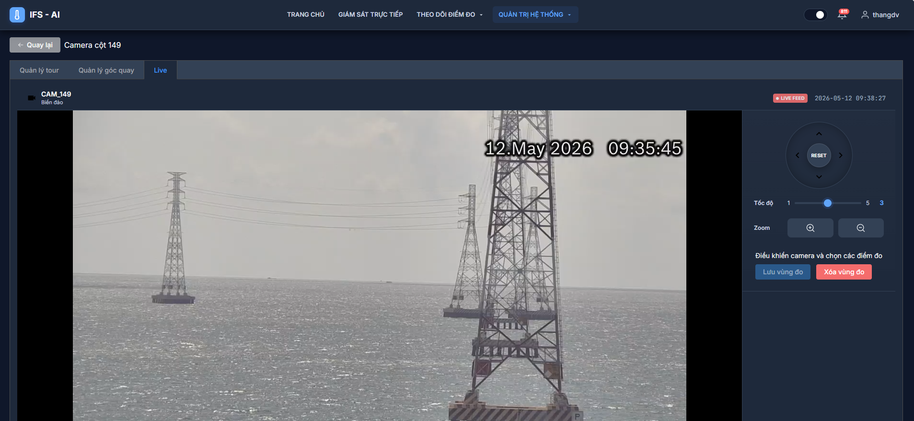
Cuối cùng, quay lại trang Quản lý tour và nhấn nút để thêm tour mới. Nhập các thông tin cần thiết như tên tour, góc quay đã tạo và thời gian dừng. Sau khi nhập xong, nhấn nút lưu để xác nhận hoặc nút hủy để thoát mà không lưu.
Để xem danh sách các tour đã tạo, người dùng nhấn vào nút tại cột hành động của camera tương ứng. Hệ thống sẽ hiển thị giao diện cho phép xem lại tất cả các góc quay đã tạo cho camera đó.
Để xóa camera, nhấn vào nút . Hệ thống sẽ yêu cầu xác nhận trước khi thực hiện xóa bỏ hoàn toàn cảm biến đó khỏi hệ thống. Nếu đồng ý nhấn nút xóa không thì ấn hủy.
Tìm kiếm và Export
Để tìm kiếm camera, người dùng nhập tên Mã/tên camera, Chức năng và Khu vực từ danh sách thả xuống nếu
cần rồi ấn nút .
Hệ thống sẽ tự động lọc và hiển thị các camera có thông tin khớp với từ khóa đã nhập.
Để xuất dữ liệu camera, người dùng nhấn vào nút .
Cảm biến
Danh sách cảm biến
Trang Danh sách cảm biến nhiệt là trung tâm quản lý các thiết bị đo lường nhiệt độ trong hệ thống. Tại đây, bạn có thể dễ dàng kiểm soát trạng thái hoạt động của từng cảm biến thông qua bộ lọc thông minh theo mã, khu vực hoặc loại cảm biến. Tính năng này hỗ trợ người dùng thêm mới thiết bị nhanh chóng bằng nút + Thêm, hoặc thực hiện chỉnh sửa và xóa bỏ dữ liệu tại cột hành động. Ngoài ra, các nút Import IEC và Export được tích hợp nhằm tối ưu hóa việc quản lý dữ liệu lớn, đảm bảo sự đồng bộ và chính xác cho công tác theo dõi nhiệt độ môi trường cũng như thiết bị tại các trạm.
Để chuyển sang danh sách dạng lưới thì chỉ cần nhấn vào nút grid
Người dùng cần chỉnh danh sách cột thì chỉ cần nhấn vào nút rồi chọn cột nào muốn ẩn đi hoặc hiện trên danh
sách rồi ấn lưu để xác nhận hoặc hủy nếu muốn thoát.
Nếu người dùng muốn chỉnh số dòng trên 1 trang như là 20, 30, 100 dòng thì chỉ cần nhấn nút rồi chọn số dòng muốn hiển thị trên mỗi trang.
Thêm cảm biến
Để thêm cảm biến mới, người dùng nhấn vào nút . Hệ thống sẽ mở giao diện nhập liệu, yêu cầu điền các thông tin cơ bản như Mã cảm biến,Khu vực, Bật/ tắt, Trạng thái, Địa chỉ IP (LAN), Địa chỉ IP (WAN), Chu kỳ lấy dữ liệu, Độ dài dữ liệu,Địa chỉ IEC, Tên cảm biến, Nguồn nhiệt, Loại cảm biến, Port, Vị trí dữ liệu, Slave ID,Protocol.
Lưu ý: Các trường có dấu * đỏ là bắt buộc phải nhập.
Nếu muốn thêm điểm giám sát thì chỉ cần nhấn vào nút ở bên bảng danh sách điểm giám sát rồi điền thông tin vô các ô Mã,Tên, Trạng thái. Người dùng có thể xóa điểm giám sát đã thêm bằng cách nhấn vào nút ở dòng tương ứng.
Để thêm tọa độ, người dùng nhấn vào nút để mở bản đồ. Sau đó, chọn vị trí bằng cách nhấn trực tiếp trên bản đồ hoặc nhập kinh độ, vĩ độ ở góc dưới bên trái. Người dùng có thể nhập mức zoom hoặc lăn chuột để phóng to, thu nhỏ bản đồ. Khi chọn xong, nhấn nút lưu. Khi hoàn tất, nhấn nút lưu để xác nhận thêm mới cảm biến hoặc nút hủy để thoát mà không lưu.
Chỉnh sửa và xóa
Để chỉnh sửa thông tin cảm biến, người dùng nhấn vào nút trong cột hành động của dòng cần chỉnh sửa. Hệ thống sẽ mở giao diện nhập liệu với các thông tin đã có tương tự giao diện khi thêm, người dùng có thể cập nhật lại các trường cần thiết và nhấn nút lưu để xác nhận hoặc nút hủy để thoát mà không lưu.
Để xóa cảm biến, người dùng nhấn vào nút trong cột hành động của dòng cần xóa. Hệ thống sẽ yêu cầu xác nhận trước khi thực hiện xóa bỏ hoàn toàn cảm biến đó khỏi hệ thống. Nếu đồng ý nhấn nút xóa không thì ấn hủy.
Tìm kiếm và Export
Để tìm kiếm cảm biến, người dùng nhập tên Mã/tên cảm biến, Khu vực Loại cảm biến, Trạng thái từ danh sách
thả xuống nếu cần rồi ấn nút . Hệ thống sẽ tự động lọc và hiển thị các cảm
biến có thông tin khớp với từ khóa đã nhập.
Để xuất dữ liệu cảm biến, người dùng nhấn vào nút .
Loại Thiết bị
Danh sách loại thiết bị
Trang Danh sách loại thiết bị là nơi quản lý các danh mục thiết bị trong hệ thống như Máy biến áp, Chống sét, Dao cách ly hay Máy cắt. Tại giao diện này, người dùng có thể nhanh chóng tra cứu thông tin dựa trên tên hoặc mã loại thiết bị. Điểm đặc biệt là nút +Bộ phận giúp người dùng đi sâu vào quản lý các chi tiết cấu thành bên trong của từng loại máy móc. Bên cạnh đó, các tính năng thêm mới, chỉnh sửa hoặc xóa bỏ bản ghi được sắp xếp trực quan, hỗ trợ tối đa việc chuẩn hóa dữ liệu đầu vào cho toàn bộ hệ thống giám sát.
Để chuyển sang danh sách dạng lưới thì chỉ cần nhấn vào nút grid
Người dùng cần chỉnh danh sách cột thì chỉ cần nhấn vào nút rồi chọn cột nào muốn ẩn đi hoặc hiện trên danh
sách rồi ấn lưu để xác nhận hoặc hủy nếu muốn thoát.
Nếu người dùng muốn chỉnh số dòng trên 1 trang như là 20, 30, 100 dòng thì chỉ cần nhấn nút rồi chọn số dòng muốn hiển thị trên mỗi trang.
Thêm loại thiết bị
Để thêm loại thiết bị mới, người dùng nhấn vào nút . Hệ thống sẽ mở giao diện nhập liệu, yêu cầu điền các thông tin cơ bản như, Mã loại thiết bị, Ghi chú.
Khi hoàn tất, nhấn nút lưu để xác nhận thêm mới loại thiết bị hoặc nút hủy để thoát mà không lưu.
Chỉnh sửa và xóa
Để chỉnh sửa thông tin loại thiết bị, người dùng nhấn vào nút trong cột hành động của dòng cần chỉnh sửa. Hệ thống sẽ mở giao diện nhập liệu với các thông tin đã có tương tự giao diện khi thêm, người dùng có thể cập nhật lại các trường cần thiết và nhấn nút lưu để xác nhận hoặc nút hủy để thoát mà không lưu.
Để xóa loại thiết bị, người dùng nhấn vào nút trong cột hành động của dòng cần xóa. Hệ thống sẽ yêu cầu xác nhận trước khi thực hiện xóa bỏ hoàn toàn loại thiết bị đó khỏi hệ thống. Nếu đồng ý nhấn nút xóa không thì ấn hủy.
Thêm Bộ phận
Để thêm bộ phận cho loại thiết bị, người dùng nhấn vào nút ở cột hành động của dòng tương ứng. Hệ thống sẽ mở giao diện Danh sách bộ phận, cho phép người dùng thêm mới, chỉnh sửa hoặc xóa bỏ các bộ phận cấu thành bên trong loại thiết bị đó.
Tiếp theo, nhấn nút để mở giao diện thêm mới bộ phận. Sau đó, nhập thông tin vào các ô Tên bộ phận, Mã bộ phận, Bộ phận cha và Trạng thái.
Bước cuối cùng, nhấn nút để mở giao diện thiết lập ngưỡng cảnh báo. Tại đây, người dùng nhấn nút bộ lọc để hiển thị danh sách loại ngưỡng, ví dụ như so với môi trường hoặc so với ngưỡng nhiệt, rồi chọn loại ngưỡng cần thiết lập. Sau khi chọn, hệ thống sẽ hiển thị các trường cấu hình tương ứng để nhập giá trị nhiệt độ theo từng mức đánh giá. Lưu ý nhập giá trị cảnh báo nguy hiểm tại ô "Đến". Có thể dùng dấu trừ bên trái để giảm hoặc dấu cộng bên phải để tăng giá trị . Sau khi nhập xong, nhấn nút lưu cấu hình để xác nhận hoặc nhấn hủy để thoát mà không lưu. Khi hoàn tất thiết lập bộ phận, nhấn lưu để thêm mới bộ phận hoặc nhấn hủy để thoát.
Chỉnh sửa và xóa bộ phận
Để chỉnh sửa thông tin bộ phận, người dùng nhấn vào nút trong cột hành động của dòng cần chỉnh sửa. Hệ thống sẽ mở giao diện nhập liệu với các thông tin đã có tương tự giao diện khi thêm, người dùng có thể cập nhật lại các trường cần thiết và nhấn nút lưu để xác nhận hoặc nút hủy để thoát mà không lưu.
Để xóa bộ phận, người dùng nhấn vào nút trong cột hành động của dòng cần xóa. Hệ thống sẽ yêu cầu xác nhận trước khi thực hiện xóa bỏ hoàn toàn bộ phận đó khỏi hệ thống. Nếu đồng ý nhấn nút xóa không thì ấn hủy.
Tìm kiếm loại thiết bị
Để tìm kiếm loại thiết bị, người dùng nhập tên Tên loại thiết bị rồi
ấn nút . Hệ thống
sẽ tự động lọc và hiển thị các
loại thiết bị có thông tin khớp với từ khóa đã nhập.
Thiết bị
Danh sách thiết bị
Trang Danh sách thiết bị đóng vai trò là cơ sở dữ liệu tổng quát cho thiết bị vận hành trong hệ thống. Tại đây, người dùng dễ dàng kiểm soát thông tin chi tiết của từng thiết bị như máy biến áp, máy cắt hay dao cách ly gắn liền với từng khu vực cụ thể. Hệ thống hỗ trợ bộ lọc đa năng giúp rút ngắn thời gian tìm kiếm, cùng các công cụ Export IEC/Import IEC và Xuất file nhằm tối ưu hóa việc quản lý và sao lưu dữ liệu quy mô lớn. Ngoài khả năng thêm mới, người quản trị có thể trực tiếp hiệu chỉnh hoặc cập nhật trạng thái hoạt động của thiết bị ngay tại cột hành động, đảm bảo tính đồng bộ cho công tác giám sát.
Để chuyển sang danh sách dạng lưới thì chỉ cần nhấn vào nút grid
Người dùng cần chỉnh danh sách cột thì chỉ cần nhấn vào nút rồi chọn cột nào muốn ẩn đi hoặc hiện trên danh
sách rồi ấn lưu để xác nhận hoặc hủy nếu muốn thoát.
Nếu người dùng muốn chỉnh số dòng trên 1 trang như là 20, 30, 100 dòng thì chỉ cần nhấn nút  rồi chọn số dòng muốn
hiển thị trên mỗi trang.
rồi chọn số dòng muốn
hiển thị trên mỗi trang.
Thêm thiết bị
Để thêm thiết bị mới, người dùng nhấn vào nút . Hệ thống sẽ mở giao diện thông tin chung để nhập các thông tin cơ bản gồm Mã thiết bị, Tên thiết bị, Loại thiết bị, Khu vực, Trạng thái, Tọa độ và Chu kỳ lấy data (phút).
Lưu ý: Các trường có dấu * đỏ là bắt buộc phải nhập.
Để chọn tọa độ, người dùng nhấn vào ô để mở bản đồ. Sau đó, chọn vị trí bằng cách nhấn trực tiếp trên bản đồ hoặc nhập kinh độ, vĩ độ ở góc dưới bên trái. Người dùng có thể nhập mức zoom hoặc lăn chuột để phóng to, thu nhỏ bản đồ. Khi chọn xong, nhấn nút lưu. Đối với chọn tên khu vực thì sẽ hiện nút"Chọn tọa độ trên bản đồ" còn đối với chọn tên trạm thì sẽ hiện nút"Chọn tọa độ trên ảnh".
Sau khi chọn loại thiết bị, hệ thống sẽ hiển thị danh sách bộ phận tương ứng bên dưới. Để thêm điểm giám sát cho một bộ phận, nhấn nút . Trong giao diện điểm giám sát, tiếp tục nhấn nút ở phía trên để mở form thêm mới. Người dùng nhập các thông tin gồm Tên, Tọa độ, Bộ phận cha, Địa chỉ IEC, Camera, Sensor, Điểm giám sát của camera được chọn và Điểm giám sát của sensor được chọn. Cách chọn tọa độ thực hiện tương tự như phần trên.
Bước cuối cùng, nhấn nút để mở giao diện thiết lập ngưỡng cảnh báo. Tại đây có hai mục: Khai báo chung từ loại thiết bị và Khai báo riêng. Ở mục Khai báo chung từ loại thiết bị, các giá trị cảnh báo tại ô "Đến" đã được điền sẵn; người dùng có thể chỉnh sửa nếu cần. Có thể dùng dấu trừ bên trái để giảm hoặc dấu cộng bên phải để tăng giá trị . Sau khi nhập xong, nhấn nút lưu cấu hình để xác nhận hoặc nhấn hủy để thoát mà không lưu.
Ở mục Khai báo riêng, người dùng có thể thiết lập ngưỡng cảnh báo riêng cho thiết bị. Tại đây, nhấn nút bộ lọc để hiển thị danh sách loại ngưỡng, ví dụ như so với môi trường hoặc so với ngưỡng nhiệt, rồi chọn loại ngưỡng cần thiết lập. Sau khi chọn, hệ thống sẽ hiển thị các trường cấu hình tương ứng để nhập giá trị nhiệt độ theo từng mức đánh giá. Lưu ý nhập giá trị cảnh báo nguy hiểm tại ô "Đến". Có thể dùng dấu trừ bên trái để giảm hoặc dấu cộng bên phải để tăng giá trị . Sau khi nhập xong, nhấn nút lưu cấu hình để xác nhận hoặc nhấn hủy để thoát mà không lưu.
Sau khi hoàn tất thiết lập, nhấn nút lưu để xác nhận thêm mới thiết bị hoặc nhấn hủy để thoát mà không lưu.
Chỉnh sửa và xóa
Để chỉnh sửa thông tin thiết bị, người dùng nhấn vào nút trong cột hành động của dòng cần chỉnh sửa. Hệ thống sẽ mở giao diện nhập liệu với các thông tin đã có tương tự giao diện khi thêm, người dùng có thể cập nhật lại các trường cần thiết và nhấn nút lưu để xác nhận hoặc nút hủy để thoát mà không lưu.
Để xóa thiết bị, người dùng nhấn vào nút trong cột hành động của dòng cần xóa. Hệ thống sẽ yêu cầu xác nhận trước khi thực hiện xóa bỏ hoàn toàn thiết bị đó khỏi hệ thống. Nếu đồng ý nhấn nút xóa không thì ấn hủy.
Tìm kiếm và Export
Để tìm kiếm thiết bị, người dùng nhập tên Tên thiết bị, Loại thiết bị, Khu vực từ danh sách
thả xuống nếu cần rồi ấn nút . Hệ thống sẽ tự động lọc và hiển thị các
thiết bị có thông tin khớp với từ khóa đã nhập.
Để xuất dữ liệu, người dùng nhấn vào nút hoặc . Hệ thống sẽ tạo file dữ liệu và cho phép người
dùng tải về.
Kênh Cảnh báo
Danh sách cảnh báo
Trang Danh sách cảnh báo là nơi thiết lập và quản lý các kênh tiếp nhận thông tin sự cố từ hệ thống. Tại đây, người dùng có thể cấu hình linh hoạt các phương thức gửi thông báo như Email, Telegram hay Push Notification cho từng nhóm đối tượng cụ thể. Thông qua các bộ lọc về tên kênh và người nhận, dễ dàng kiểm soát trạng thái hoạt động của các luồng tin nhắn báo động.
Để chuyển sang danh sách dạng lưới thì chỉ cần nhấn vào nút grid
Người dùng cần chỉnh danh sách cột thì chỉ cần nhấn vào nút rồi chọn cột nào muốn ẩn đi hoặc hiện trên danh
sách rồi ấn lưu để xác nhận hoặc hủy nếu muốn thoát.
Nếu người dùng muốn chỉnh số dòng trên 1 trang như là 20, 30, 100 dòng thì chỉ cần nhấn nút rồi chọn số dòng muốn hiển thị trên mỗi trang.
Thêm kênh cảnh báo
Để thêm kênh cảnh báo mới, người dùng nhấn vào nút . Hệ thống sẽ mở giao diện nhập liệu, yêu cầu điền các thông tin cơ bản như Tên kênh cảnh báo, Mã cảnh báo, Nơi nhận cảnh báo, Người dùng, Ghi chú.
Lưu ý: Các trường có dấu * đỏ là bắt buộc phải nhập.
Khi hoàn tất, nhấn nút lưu để xác nhận thêm mới kênh cảnh báo hoặc nút hủy để thoát mà không lưu.
Chỉnh sửa và xóa
Để chỉnh sửa thông tin kênh cảnh báo, người dùng nhấn vào nút trong cột hành động của dòng cần chỉnh sửa. Hệ thống sẽ mở giao diện nhập liệu với các thông tin đã có tương tự giao diện khi thêm, người dùng có thể cập nhật lại các trường cần thiết và nhấn nút lưu để xác nhận hoặc nút hủy để thoát mà không lưu.
Để xóa kênh cảnh báo, người dùng nhấn vào nút trong cột hành động của dòng cần xóa. Hệ thống sẽ yêu cầu xác nhận trước khi thực hiện xóa bỏ hoàn toàn kênh cảnh báo đó khỏi hệ thống. Nếu đồng ý nhấn nút xóa không thì ấn hủy.
Tìm kiếm
Để tìm kiếm , người dùng nhập tên Tên kênh cảnh báo, Nơi nhận cảnh báo, Email, Người dùng từ danh sách
thả xuống nếu cần rồi ấn nút . Hệ thống sẽ tự động lọc và hiển thị các
kênh cảnh báo có thông tin khớp với từ khóa đã nhập.
Bộ cảnh báo
Danh sách cảnh báo hệ thống
Trang Danh sách cảnh báo hệ thống đóng vai trò là bộ lọc quy tắc, giúp xác định cách thức phản hồi khi phát hiện các sự kiện bất thường. Tại đây, bạn có thể thiết lập mối liên kết giữa các sự kiện (như quá nhiệt, phát hiện người hoặc ô tô) với các kênh nhận tin tương ứng. Thông qua giao diện quản lý tập trung, người dùng dễ dàng kiểm soát trạng thái sử dụng của từng bộ cảnh báo tại các khu vực khác nhau. Tính năng thêm mới và các công cụ tùy chỉnh tại cột hành động hỗ trợ linh hoạt việc thay đổi kịch bản giám sát, nhằm đảm bảo mọi tình huống rủi ro đều được thông báo đến đúng bộ phận phụ trách.
Để chuyển sang danh sách dạng lưới thì chỉ cần nhấn vào nút grid
Người dùng cần chỉnh danh sách cột thì chỉ cần nhấn vào nút rồi chọn cột nào muốn ẩn đi hoặc hiện trên danh
sách rồi ấn lưu để xác nhận hoặc hủy nếu muốn thoát.
Nếu người dùng muốn chỉnh số dòng trên 1 trang như là 20, 30, 100 dòng thì chỉ cần nhấn nút rồi chọn số dòng muốn hiển thị trên mỗi trang.
Thêm bộ cảnh báo
Để thêm bộ cảnh báo mới, người dùng nhấn vào nút . Hệ thống sẽ mở giao diện nhập liệu, yêu cầu điền các thông tin cơ bản như Bộ cảnh báo, Mã cảnh báo, Kênh cảnh báo, Sự kiện, Thời gian cảnh báo, Khu vực,Trạng thái.
Lưu ý: Các trường có dấu * đỏ là bắt buộc phải nhập.
Khi hoàn tất, nhấn nút lưu để xác nhận thêm mới bộ cảnh báo hoặc nút hủy để thoát mà không lưu.
Chỉnh sửa và xóa
Để chỉnh sửa thông tin bộ cảnh báo, người dùng nhấn vào nút trong cột hành động của dòng cần chỉnh sửa. Hệ thống sẽ mở giao diện nhập liệu với các thông tin đã có tương tự giao diện khi thêm, người dùng có thể cập nhật lại các trường cần thiết và nhấn nút lưu để xác nhận hoặc nút hủy để thoát mà không lưu.
Để xóa bộ cảnh báo, người dùng nhấn vào nút trong cột hành động của dòng cần xóa. Hệ thống sẽ yêu cầu xác nhận trước khi thực hiện xóa bỏ hoàn toàn bộ cảnh báo đó khỏi hệ thống. Nếu đồng ý nhấn nút xóa không thì ấn hủy.
Tìm kiếm
Để tìm kiếm , người dùng nhập tên Bộ cảnh báo, Kênh cảnh báo, Sự kiện, Khu vực từ danh sách
thả xuống nếu cần rồi ấn nút . Hệ thống sẽ tự động lọc và hiển thị các
bộ cảnh báo có thông tin khớp với từ khóa đã nhập.
Người dùng
Danh sách người dùng
Trang Danh sách người dùng là trung tâm quản lý tài khoản và phân quyền truy cập cho đội ngũ vận hành hệ thống. Tại đây, bạn có thể dễ dàng kiểm soát thông tin cá nhân như họ tên, email, số điện thoại và Telegram ID gắn liền với từng khu vực quản lý cụ thể. Hệ thống hỗ trợ bộ lọc thông minh giúp tra cứu nhanh nhân viên dựa trên trạng thái hoạt động hoặc thông tin liên lạc. Thông qua nút Thêm và các công cụ chỉnh sửa tại cột hành động, người quản trị linh hoạt trong việc cấp mới hoặc cập nhật quyền hạn, nhằm đảm bảo tính bảo mật cho toàn bộ trạm giám sát.
Để chuyển sang danh sách dạng lưới thì chỉ cần nhấn vào nút grid
Người dùng cần chỉnh danh sách cột thì chỉ cần nhấn vào nút rồi chọn cột nào muốn ẩn đi hoặc hiện trên danh
sách rồi ấn lưu để xác nhận hoặc hủy nếu muốn thoát.
Nếu người dùng muốn chỉnh số dòng trên 1 trang như là 20, 30, 100 dòng thì chỉ cần nhấn nút rồi chọn số dòng muốn hiển thị trên mỗi trang.
Thêm người dùng
Để thêm người dùng mới, người dùng nhấn vào nút . Hệ thống sẽ mở giao diện nhập liệu, yêu cầu điền các thông tin cơ bản như Tên đăng nhập,Tên, Email, Số điện thoại, Telegram User, Mật khẩu, Khu vực, Họ và tên đệm, Trạng thái, Quyền.
Lưu ý: Các trường có dấu * đỏ là bắt buộc phải nhập.
Khi hoàn tất, nhấn nút lưu để xác nhận thêm mới người dùng hoặc nút hủy để thoát mà không lưu.
Chỉnh sửa và xóa
Để chỉnh sửa thông tin người dùng, người dùng nhấn vào nút trong cột hành động của dòng cần chỉnh sửa. Hệ thống sẽ mở giao diện nhập liệu với các thông tin đã có tương tự giao diện khi thêm, người dùng có thể cập nhật lại các trường cần thiết và nhấn nút lưu để xác nhận hoặc nút hủy để thoát mà không lưu.
Để xóa người dùng, người dùng nhấn vào nút trong cột hành động của dòng cần xóa. Hệ thống sẽ yêu cầu xác nhận trước khi thực hiện xóa bỏ hoàn toàn người dùng đó khỏi hệ thống. Nếu đồng ý nhấn nút xóa không thì ấn hủy.
Tìm kiếm
Để tìm kiếm , người dùng nhập tên Trạng thái, Tên, Email, Số điện thoại, Telegram từ
danh sách thả xuống nếu cần rồi ấn nút . Hệ thống sẽ tự động lọc và hiển thị các
người dùng có thông tin khớp với từ khóa đã nhập.